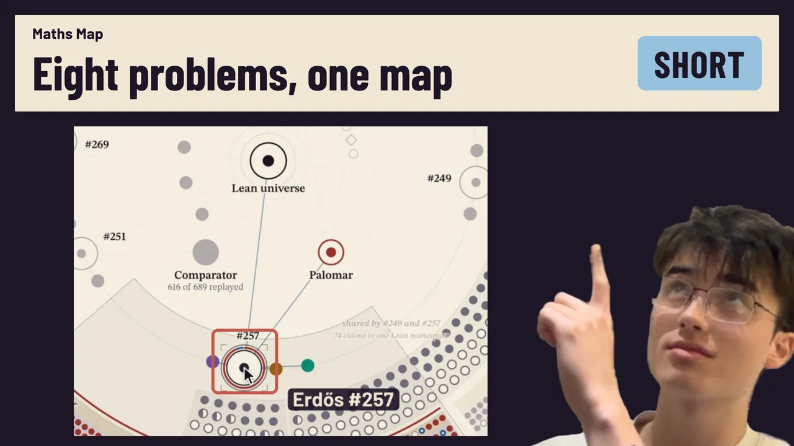
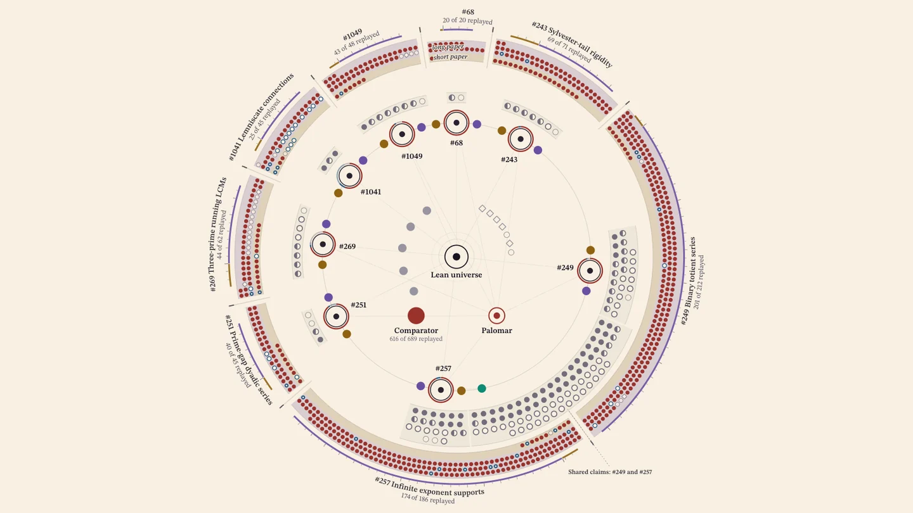
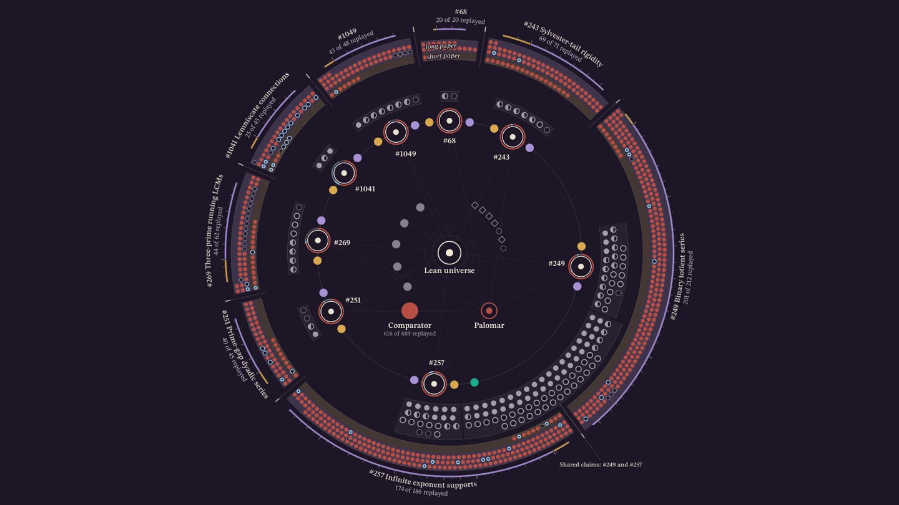
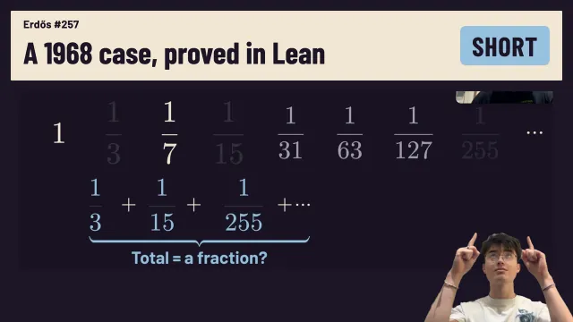
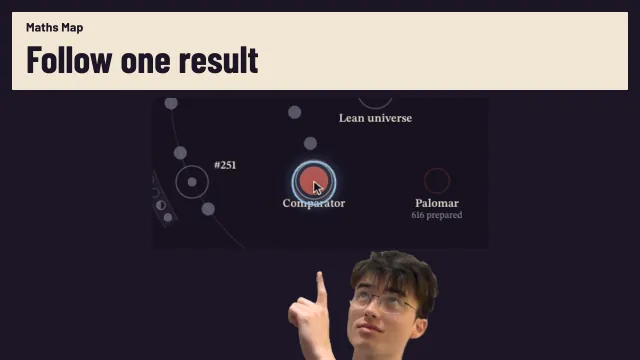
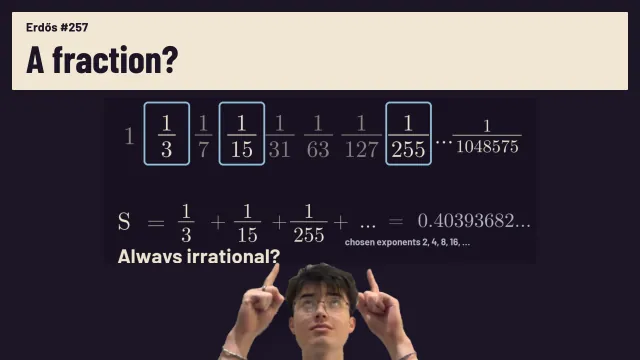

1:49Short video · 1:49Find a theorem on Maths Map, open its paper, and see the available Lean and Comparator checks.
Maths Map
Erdős problems · Lean 4 · Comparator
AI-assisted research on eight Erdős problems: a research record and paper for each, Lean 4 proofs of partial results, and Comparator results where they exist.


Open the websiteMore videos

1:41Short video · 1:41Introduces the Lean-checked proof of Erdős’s 1968 case of problem #257, removing his extra restriction.
6:20Full video · 6:20Follow Erdős #257 through Maths Map: from its theorems and checks to the research record, specialist paper, exposition and video.
30:08Full video · 30:08Starting with fractions, prove Erdős’s 1968 case of problem #257: a convergence condition makes the selected infinite sum irrational.
Code
- plectis-erdos Papers, Lean proofs, experiments and open questions from the research on eight Erdős problems, and papers on how the research was done.
- plectis-erdos-lean Lean 4 source for the eight problems. Comparator accepted selected proofs against separately written statements, and Palomar, an online proof registry, reran some of them.